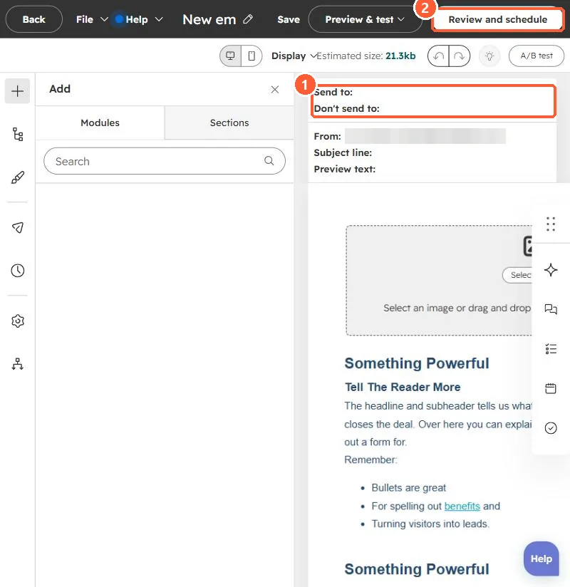

Short answer
Marketing emails have Don't send to unengaged contacts on by default. HubSpot's KB defines unengaged as recipients who have not opened your last 11 marketing emails, using the Sends since last engagement property. So the number sent can be lower than the segment. HubSpot keeps engagement history even if you delete and recreate a contact, and for automated emails a change to the setting after publishing does not apply.
1. Where it shows
In my demo portal, the email editor summarizes Send to and Don't send to at the top. The checkbox is in the send options before you schedule.


2. Why leave it on
HubSpot says mailbox providers filter low-engagement mail to spam. Sending to people who never open lowers inbox placement for everyone else. See the deliverability checklist.
3. Related
Bounced contacts still marketing and hard vs soft bounces.